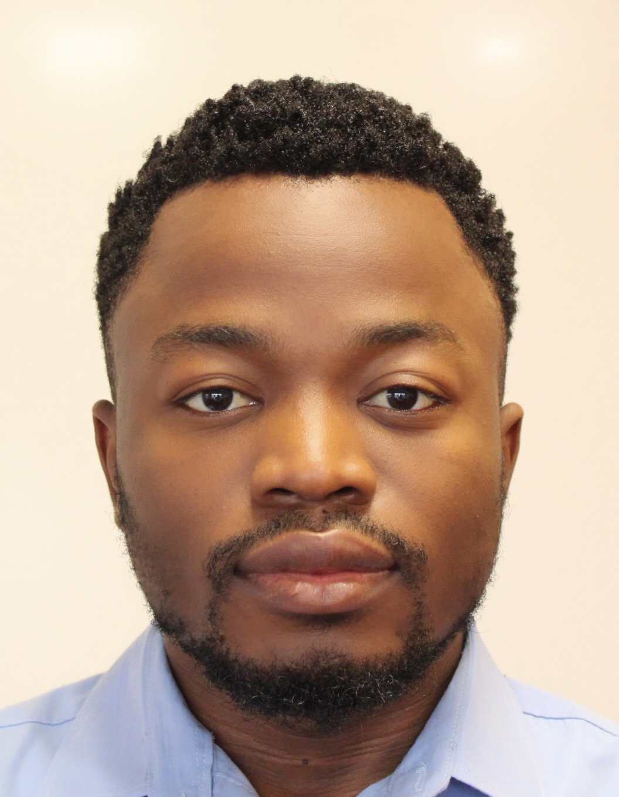

Site under construction
Mandhri Dushyanthi Abeysooriya
Mandhri earned her Bachelor’s degree in a combination of biotechnology, biochemistry and genetics from Bangalore university, India in year 2017 and her Master’s degree in Biotechnology and Bioinformatics from Deakin university, Australia in 2021. Mandhri joined the Ziemann lab in 2020 to complete her Master’s research project to investigate the effect of Homocysteine on DNA methylation and gene expression. She was able to achieve distinction for her Master’s thesis project and was able to first author a manuscript entitled “Gene Name Errors: Lessons Not Learned”. During her Bachelor’s degree, she was also able to first author another publication related to microbiology under the title “A Study on VRSA Prevalence in Hospital Settings-Bangalore India". After her Bachelor’s she worked as a quality assurance intern in a leading pharmaceutical company in Sri Lanka. She was recently selected to do her PhD at Deakin University after completing her Master’s degree in July 2021 where she will be pursing her further studies in related to epigenetic mechanisms of sex differences in aging. As for leisure time activities, Mandhri likes to play chess and League of Legends (online game). She also enjoys cloud watching and listening to instrumental music.
Links
Kingsley Isaac Ogamanya

Kingsley earned his bachelor degree in biochemistry in 2018 from The Federal University of Technology in Nigeria. Kingsley joined the group in February 2021 to complete a masters project investigating the impacts of genetic variation among inbred mice on experimental findings. During his Bachelor’s degree, Kingsley co-authored a publication on Biochemical and liver histological changes in rats exposed to sub-lethal dose of Uproot-pesticide and the protective potentials of nutritional supplements. Kingsley will be completing his Masters project in November 2021 and will be looking for opportunities to start a PhD project or work as a bioinformatics or biotechnology research assistant in Australia or abroad. Kingsley loves the beach, dogs, and enjoys playing snooker.
Portfolio
Ujowundu CO, Ogamanya KI, Ujowundu FN, Adejoh VO, Iheme CI, Igwe KO. Biochemical and liver histological changes of Wistar albino rats exposed to uproot-pesticide and the protective potentials of nutritional supplements. J Appl Biol Biotech, 2020;8(04):026-032. DOI: https://dx.doi.org/10.7324/JABB.2020.80404
Contact
Twitter: @isaackingsley85
Linkedin: www.linkedin.com/in/kingsley-isaac-ogamanya-3b146a19b
Email: isaackingsley85[αt]yahoo.com
Aaron Kovacs
Aaron earned his Bachelor of Biomedical Science with Distinction in 2020 from Deakin University. Aaron joined the group in 2020 to undertake a placement with Mark Ziemann. During this placement, Aaron collaboratively completed a bioinformatics project which involved creating accessible gene signatures for a number of diseases including diabetes, epilepsy, SARS, SARS-CoV-2, MERS and heart disease. In 2021, Aaron began his Honours project investigating the role of epigenetic changes in contributing to phenotypic adaptations in guppies bred for many generations under altered light conditions. Aaron will be completing his Honours in November of 2021 and is interested in undertaking a PhD project in 2022.
Contact
email: akovacs[αt]deakin.edu.au